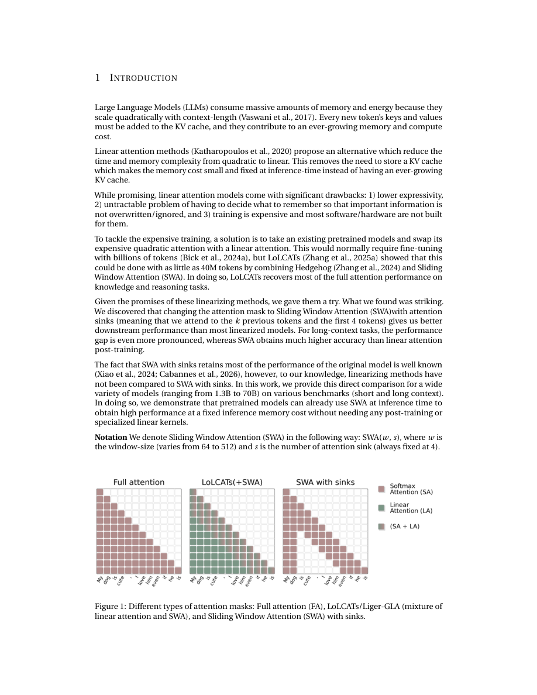

#1
★ 8/10
Sliding-window beats linear attention
Sliding-window beats linear attention

图 Figure · Page 2 of paper
🎯 （AI 中文深度分析暂不可用：Anthropic API 额度不足。英文栏为论文原文摘要，下方链接均可正常访问。）
Due to the nature of quadratic attention, Large Language Models (LLMs) consume a lot of memory and energy
| 维度 | 中文 | English |
|---|---|---|
| ❓ 待解决 的问题 |
（AI 中文深度分析暂不可用：Anthropic API 额度不足。英文栏为论文原文摘要，下方链接均可正常访问。） | Due to the nature of quadratic attention, Large Language Models (LLMs) consume a lot of memory and energy. Every new token costs more than the previous one. For each additional token, the keys and values must be stored in memory indefinitely, which is unsustainable. Several alternatives have been proposed to fix the quadratic scaling problem, one of which is retrofitting LLMs to use Linear Attention. This idea has attracted a lot of attention, given its promise to solve the quadratic scaling problem with state-of-the-art performance at low cost. However, this line of research has not been properly compared to simpler baselines. In this work, we show that Sliding Window Attention (SWA) with sinks performs as well or better than post-trained Linear Attention models. We observe this across multiple LLMs on various downstream tasks. For long-context reasoning tasks (Needle-in-a-Haystack and BABILong), SWA achieves massively higher performance (2 to 10 times higher than linear attention). SWA requires no post-training, is extremely fast, and requires low memory; therefore, making it an extremely cheap and reliable solution. To reduce inference memory cost, we strongly recommend switching to SWA instead of post-training linear models. Linear attention models may have shown some promise, but they likely require to be trained from scratch or extensive post-training in order to even match SWA. |
| 💡 解决 的亮点 |
（AI 中文深度分析暂不可用：Anthropic API 额度不足。英文栏为论文原文摘要，下方链接均可正常访问。） | See the paper’s original abstract in the "Problem / 背景" row above. |
| 🧪 实验 内容 |
（AI 中文深度分析暂不可用：Anthropic API 额度不足。英文栏为论文原文摘要，下方链接均可正常访问。） | See the paper’s original abstract in the "Problem / 背景" row above. |
| 📊 实验 结果 |
（AI 中文深度分析暂不可用：Anthropic API 额度不足。英文栏为论文原文摘要，下方链接均可正常访问。） | See the paper’s original abstract in the "Problem / 背景" row above. |
| 🏁 结论 | （AI 中文深度分析暂不可用：Anthropic API 额度不足。英文栏为论文原文摘要，下方链接均可正常访问。） | See the paper’s original abstract in the "Problem / 背景" row above. |
| 🔗 论文 链接 |
arXiv: 2608.28444v1 · 📥 PDF | |
⚙️ Method · 方法详解
（AI 中文深度分析暂不可用：Anthropic API 额度不足。英文栏为论文原文摘要，下方链接均可正常访问。）
See the paper’s original abstract in the "Problem / 背景" row above.
🌟 Why It Matters · 为什么重要
（AI 中文深度分析暂不可用：Anthropic API 额度不足。英文栏为论文原文摘要，下方链接均可正常访问。）
See the paper’s original abstract in the "Problem / 背景" row above.